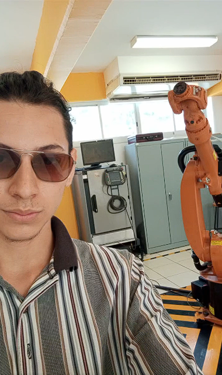

Automatización industrial
Desarrollo y simulación de celdas automatizadas con robots industriales y sistemas de transporte.

Ingeniero Mecatrónico enfocado en programación, automatización y robótica.
Soy ingeniero mecatrónico interesado en el desarrollo de sistemas automatizados, robótica y programación. Me gusta crear proyectos que combinan software, electrónica y control.
Desarrollo y simulación de celdas automatizadas con robots industriales y sistemas de transporte.
Desarrollo de sistemas de control utilizando Arduino, ESP32, MATLAB y Simulink.
Creación de aplicaciones y herramientas para automatización y proyectos personales.
Si quieres conocer más sobre mis proyectos, puedes contactarme.